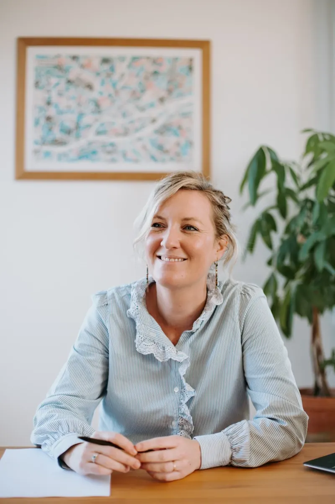

Sophrologie
Renouez avec vos ressentis émotionnels, corporels et mentaux et disposez d'outils simples et personnalisés dans votre quotidien.
- Première séance 1h30, suivantes 1h
- Entre 3 et 10 séances selon l'objectif
- Soulagement dès les premières séances
- Stress, burn-out, sommeil, crises d'angoisse, phobie sociale
Livret d'accompagnement offert après chaque séance